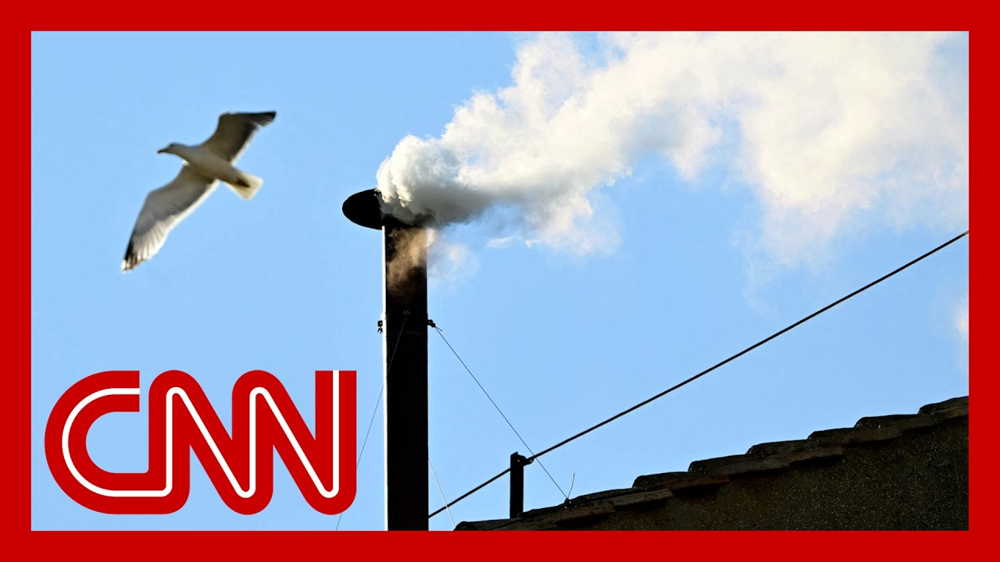

来B站一起耍【Global每日英语简报】
【白烟升起：枢机主教们已选出新教皇】
Summary: The paragraph describes the electrifying moment when white smoke emerges from the Sistine Chapel, signaling the election of a new pope, followed by celebrations, anticipation, and speculation about the identity and traditions of the newly elected pontiff.
摘要： 这段文字描述了西斯廷教堂升起白烟、宣告新教皇当选的激动时刻，随后是庆祝活动、对新教皇身份的期待以及对新教皇传统和身份的猜测。

⏱️ Estimated Reading Time: 13 min
Before we can go Google all the things about him, or find the videos or the tweets, or learn about his career and his CV and I think we see it.
在我们能去谷歌搜索关于他的一切，或找到视频和推文，或了解他的职业生涯和简历之前，我想我们已经看到了。
Sorry. Here we go. I'm sorry.
抱歉。开始了。我很抱歉。
It looks like smoke and white smoke.
看起来像是烟，而且是白烟。
Is it is who it.
是不是就是那个人。
But we're going to.
但我们要。
We're going to watch it.
我们要看着它。
I'm going to go to Aaron and Aaron as I toss to you.
我要交给亚伦，亚伦，现在转交给你。
Obviously the crowd there thinks that that is the white smoke.
显然，人群认为那就是白烟。
But I know we're going to wait for the bells.
但我知道我们要等待钟声。
It it looks as if it is Dana.
看起来好像是达纳。
It is clearly white and and we have seen the black smoke which was clearly black.
这显然是白色的，而且我们之前看到过黑烟，那明显是黑色的。
So I think we can say this is white smoke.
所以我想我们可以说这是白烟。
And they have selected a poke there to me.
他们已经选出了一位教皇。
And that means the Cardinals have chosen a poke, the 267 successor of some pizza.
这意味着枢机主教们已选出了第267位教皇。
And shortly we will find out the name, of who the Cardinal has cousins of elected and who, which name this new pope will be taking.
很快我们将得知这位枢机主教的名字，以及新教皇将采用的名字。
Yes.
是的。
And if we are watching and everyone to breathe it in the white smoke here over the Sistine Chapel here at the Vatican.
如果我们正在观看，每个人都在呼吸着梵蒂冈西斯廷教堂上空的白烟。
And the crowd, you see some of the celebrations, the emotion you can't not feel the emotion.
人群，你看到一些庆祝活动，那种情绪你无法不感受到。
Being here to see something like this, I feel a little shaky, to be honest, to witness such a thing.
能在这里见证这样的时刻，说实话，我感到有点颤抖。
And the joy of so many people, white smoke, as they will soon say, Christopher Habemus paid.
这么多人的喜悦，白烟，正如他们很快会说，克里斯托弗·哈贝马斯宣布。
We have a Pope.
我们有了一位教皇。
Yeah, that was incredible excitement.
是的，那是令人难以置信的兴奋。
It was the crowd that really saw the white smoke first.
是人群最先真正看到了白烟。
Yes, an electric atmosphere as the the smoke came out and it was clearly white out as it billowing out from the Sistine Chapel chimney.
是的，当烟从西斯廷教堂的烟囱中滚滚而出时，气氛非常激动，而且明显是白色的。
It was real sense of joy and excitement here, and an amazing moment for joy and excitement.
这里充满了真正的喜悦和兴奋，这是一个令人惊叹的时刻。
And as that smoke comes out now, there is that means there is a cardinal who is now a person who has accepted the mantle of Saint Peter, and Will will be going to the again this year.
随着烟雾的升起，这意味着有一位枢机主教已经接受了圣彼得的衣钵，并将再次前往。
That's right.
没错。
Well, he will be asked by, the Cardinals, do you accept?
他将被枢机主教们问，你接受吗？
And you have to say yes or no.
你必须回答是或否。
And then they ask him what they will you take and you have to say which name he will take, and then the cardinals will come out and make an oath of allegiance to the new pope, and then the pope will go into the Room of Tears, which is it's called that because it's a room where traditionally popes, you can just have just been elected off of an overwhelmed by emotion, and then he'll be fitted into, the white House literally have three sizes small, medium and large.
然后他们会问他将采用什么名字，他必须回答他将采用的名字，接着枢机主教们会出来向新教皇宣誓效忠，然后教皇会进入“泪之室”，之所以这么叫是因为传统上教皇刚当选时会因情绪激动而流泪，之后他会穿上白袍，实际上有三种尺寸：小、中、大。
And these are the bells we are now hearing.
这就是我们现在听到的钟声。
And you can see this right over Saint Peter's Basilica, over our shoulder.
你可以看到圣彼得大教堂上方的钟声。
We will show you you can actually see the giant bell ringing.
我们会让你看到那口大钟正在敲响。
And that is the formal announcement and confirmation that there is a new pope here.
这是正式宣布和确认这里有一位新教皇。
As the head of the Catholic Church in Rome.
作为罗马天主教会的领袖。
And and now.
而现在。
And now what happens is we wait with this, this joy.
现在我们要带着这种喜悦等待。
Right?
对吧？
But now there is the anticipation of who?
但现在大家都在期待是谁？
No one knows who the new pope is, who has just been selected and elected.
没有人知道新教皇是谁，刚刚被选出的人是谁。
Until we see that man walk out on the balcony with the red curtains behind us here on Saint Peter's Square, we can all see.
直到我们看到那个人走上阳台，身后是圣彼得广场的红色帷幕，我们都能看到。
So now, in these next minutes, as we await that, Christopher, I would imagine the tens of thousands of people who are already here.
所以现在，在接下来的几分钟里，克里斯托弗，我想象着已经在这里的成千上万的人。
Now these bells are ringing out over Rome.
现在这些钟声在罗马上空回荡。
Oh yes, more and more people will come to perhaps be among the very first to see the Pope.
哦是的，越来越多的人会来，可能是最早见到教皇的人之一。
We won't know who it is until we see his face.
直到我们看到他的脸，我们才会知道是谁。
He will be introduced to everyone at the same time.
他将同时被介绍给所有人。
Yes, and it will be the Cardinal deacon, the proto deacon, Dominic Lamberti, who will announce it.
是的，将由枢机执事、首席执事多米尼克·兰贝蒂宣布。
Of course, if it's not him announcing it.
当然，如果不是他宣布的话。
But we are expecting couple number the clergy deacon to make an announcement how they must.
但我们预计几位执事会按照惯例宣布。
And he will then give the name of the cardinal that has been elected pope, and the name that the new pope has decided to take.
然后他会宣布当选教皇的枢机主教的名字，以及新教皇决定采用的名字。
Yes.
是的。
And that that tradition of taking a new name started with the first pope, of course, Saint Peter, the name no one has taken since in his honor.
而采用新名字的传统始于第一位教皇，当然，圣彼得，之后没有人再采用这个名字以示尊敬。
But he was born Simon.
但他出生时的名字是西蒙。
And of course, we have here at Saint Peter's Basilica the very first Pope, Father Edward Back Passion is a priest is joining us now.
当然，我们在圣彼得大教堂这里有第一位教皇，爱德华·贝克神父现在加入我们。
So, Father Beck, here we are.
所以，贝克神父，我们在这里。
This we presume fifth round, fourth or fifth.
我们推测这是第五轮，第四或第五轮。
It's unclear exactly which round it was of voting a new pope.
不清楚具体是第几轮投票选出了新教皇。
On the same day that we found out the last two popes had become a pope.
就在我们得知前两位教皇当选的同一天。
So what does this mean in terms of who the man is?
那么这对这个人的身份意味着什么？
Who's going to walk out on that balcony within the next half an hour?
谁将在接下来的半小时内走上那个阳台？
So exciting to be here to witness this and I think it means either of two things.
能在这里见证这一切真是太激动了，我认为这意味着两种情况之一。
Either it was one of the frontrunners, whom we've been considering with the names, or I do think there are rumors of these are rumors, Italian rumors that it's possibly an Italian who has been elected and that it is not someone we've necessarily been talking about.
要么是我们一直在考虑的名字中的领先者之一，要么我认为有传言，意大利的传言，可能是意大利人当选，而且不一定是我们在谈论的人。
Could be a surprise.
可能是个惊喜。
So I'll be very interested to see who walks out on that balcony.
所以我会非常感兴趣看到谁走上那个阳台。
And also, it will be interesting to see what they wear.
而且，看看他们穿什么也会很有趣。
We know that they wear the traditional white cassock of the Pope, but if you'll remember, Pope Benedict, he it didn't fit him exactly.
我们知道他们会穿传统的教皇白袍，但如果你还记得，教皇本笃，那并不完全合身。
So he wore a white alb, but he wore, red velvet rossetto with ermine.
所以他穿了一件白色长袍，但他还穿了红色天鹅绒的貂皮边饰。
So it was a very regal, very traditional kind of ensemble that he walked out on the balcony with.
所以他走上阳台时穿的是一套非常庄严、非常传统的装束。
Pope Francis dispensed with all of that.
教皇方济各摒弃了所有这些。
He came out in simply the white suit and the white cassock, and he said, Bueno.
他简单地穿着白色西装和白袍出来，他说，Bueno。
And when I said, up, you know, very informal.
当我说，起来，你知道，非常随意。
And he greeted the people and asked them to pray for him.
他向人们问好，并请他们为他祈祷。
So the tone of what we see and the dress of what we see, I think will be very important, but we can be prepared for a surprise of someone we haven't been talking about.
所以我们将看到的语气和着装，我认为会非常重要，但我们可以准备好迎接一个我们没在谈论的人的惊喜。
I think.
我想。
But again, it could be one of the frontrunners.
但同样，也可能是领先者之一。
Nobody knows these their own rumors, nobody knows and we may not know for a long time if ever.
没有人知道这些传言，没有人知道，我们可能很长时间都不会知道，甚至永远不知道。
Christopher, looking back at Pope Francis and some, you know, books that were written about how it happened for him, it also happened at this time, either this vote or the what.
克里斯托弗，回顾教皇方济各和一些关于他当选的书，也是在这个时候发生的，无论是这次投票还是什么。
We're not exactly sure whether this was the fourth or fifth round, but you see how you start with a few frontrunners.
我们不太确定这是第四轮还是第五轮，但你可以看到一开始有几位领先者。
You could have 4 or 5 and how the folks knew yes, for it to have happened.
可能有4或5位，人们是怎么知道的，是的，为了让它发生。
I understand the past two times it did happen this quickly, but for it to happen this quickly, it does mean groups of people need to move behind candidates very quickly.
我理解过去两次也发生得这么快，但这么快发生，确实意味着人们需要迅速支持候选人。
Yes, and I think that's how the conclave is set up for the first vote kind of sets up where supplies, and then it very quickly becomes a two horse race because cardinals shift their support to the leading candidates.
是的，我认为这就是秘密会议如何设置的，第一轮投票大致确定了局势，然后很快变成两强相争，因为枢机主教们将支持转向领先的候选人。
And that's why you do get results swiftly when it comes to a secret ballot.
这就是为什么在秘密投票时结果会迅速出来。
You.
你。
Yes, yes, a secret ballot.
是的，是的，秘密投票。
And watching these bells and this beautiful sound ring, the feeling of a pure sort of a celebration.
看着这些钟声和这美妙的钟声响起，一种纯粹的庆祝感。
Ben, wait a minute.
本，等一下。
Is here also in Saint Peter's Square, a surrounded by people and band.
也在圣彼得广场，被人群和乐队包围。
At that instant, when they saw the smoke.
在那一刻，当他们看到烟时。
What happened?
发生了什么？
There was a great cheer, a cheer of joy.
有一阵巨大的欢呼，一阵喜悦的欢呼。
Because so many people here have been waiting since yesterday to see the white smoke.
因为这里很多人从昨天开始就在等待白烟。
We saw the black smoke at midday and anticipation is growing as the day goes on.
我们在中午看到了黑烟，随着时间推移，期待越来越高。
So what we heard was this great cheer of relief and joy as we saw that great plume of white smoke emerging from the chimney on top of the Sistine Chapel.
所以我们听到的是这种解脱和喜悦的巨大欢呼，当我们看到西斯廷教堂烟囱上升起巨大的白烟时。
Now, of course, I think you already mentioned we don't know if this was the fourth or the fifth round of voting since yesterday evening.
当然，我想你已经提到，我们不知道这是昨晚以来的第四轮还是第五轮投票。
We have yet to see.
我们还得看看。
We don't know.
我们不知道。
Of course, who the new Pope is, but we knew we do not have a famous papa.
当然，新教皇是谁，但我们知道我们没有一位著名的教皇。
We have a pope, as they say in the Latin.
我们有一位教皇，正如拉丁语所说。
So we'll have to wait and see.
所以我们得等等看。
All eyes will be on the Basilica of Saint Peter behind me to hear the name of the new pope.
所有人的目光都将集中在我身后的圣彼得大教堂，等待听到新教皇的名字。